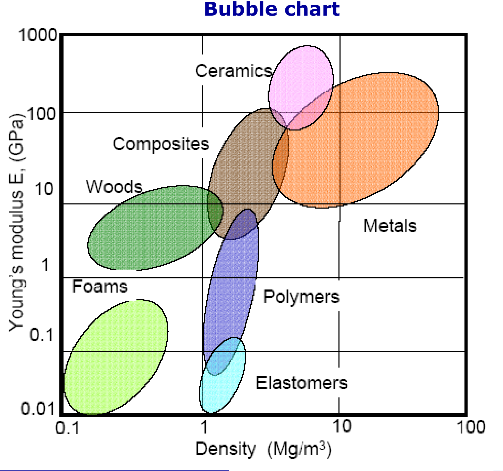
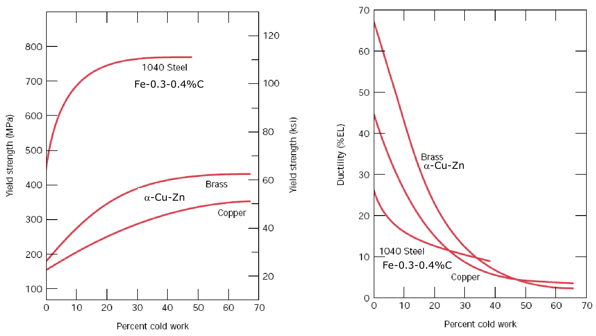
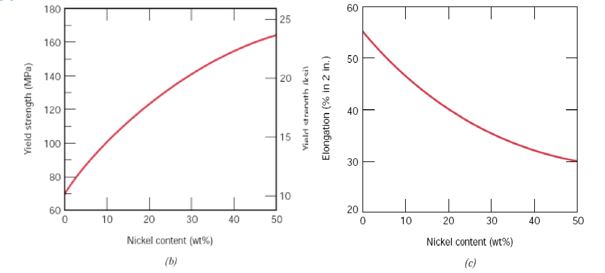
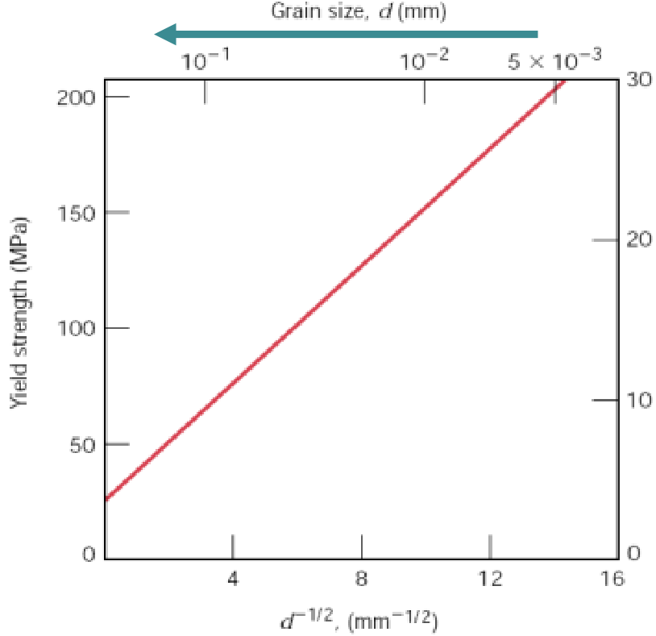
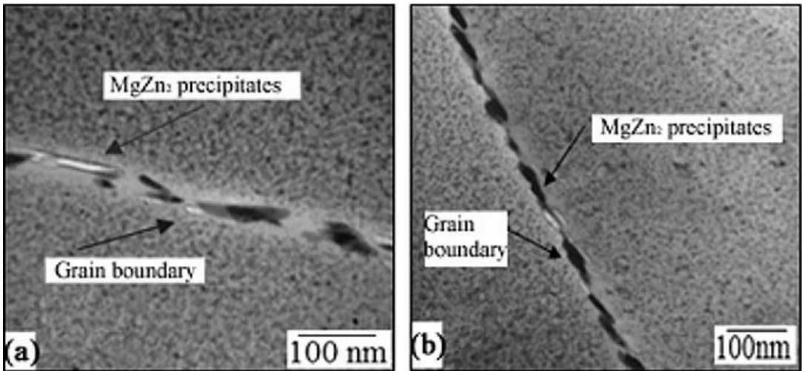
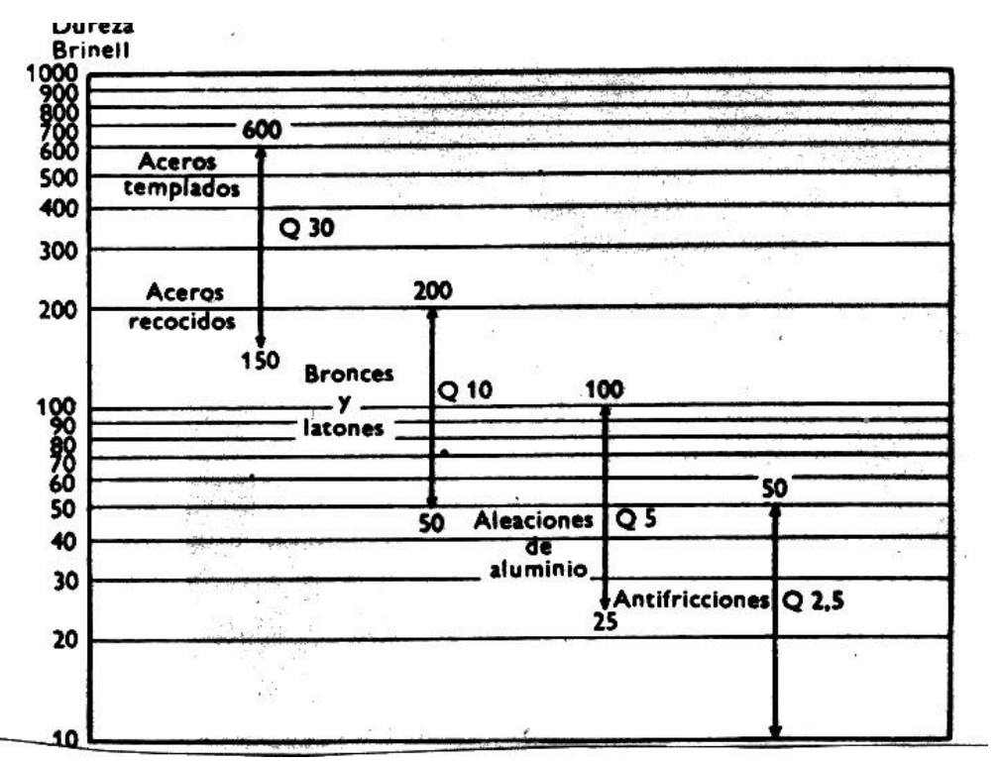
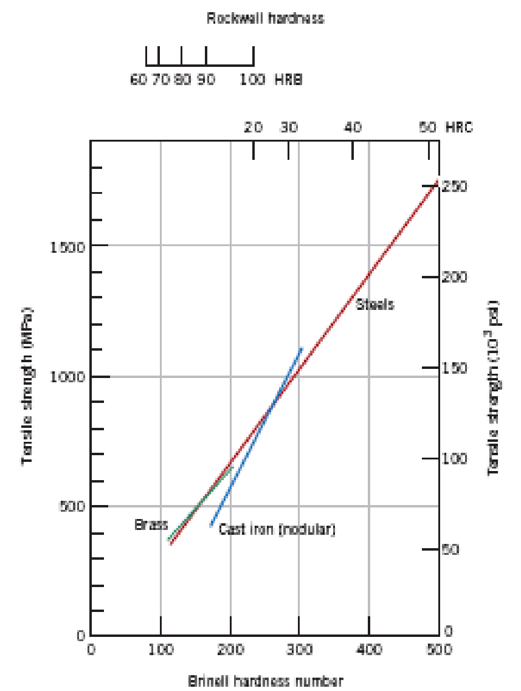

Mechanical Properties
The tensile test and the stress-strain curve, elastic and plastic behaviour, toughness and resilience, true stress and strain, the strengthening mechanisms and the hardness tests.
Central idea: a mechanical property is how a material responds to a force. The uniaxial tension test turns the load and the elongation of a standard specimen into a stress-strain curve; from that one curve come the stiffness, the strength, the ductility, the toughness and the resilience. The microstructure decides where the curve lies, and the strengthening mechanisms are the ways of moving it up by making dislocations harder to move.
This page follows the two official sessions of Topic 5 in order. Part I (Session 11) covers the basic concepts, the tension test, the elastic and plastic zones, the slip systems, the parameters read from the curve and the true stress-strain curve, and it also covers the other mechanical tests of the same session. Part II (Session 12) covers the strengthening mechanisms and the hardness tests. Every section names the slides it comes from. Figures are redrawn from the slides where a clean redraw is possible; the charts whose values cannot be redrawn faithfully are copied from the slides as PNG crops, and this is stated in each caption.
Part I — Mechanical properties I (Session 11)
§ 1 Basic concepts [Session 11 Slides 2-3]
- A mechanical property is how a material responds to an outside stimulus induced by mechanical forces [Session 11 Slide 3].
- The key mechanical properties are stiffness, strength, hardness, ductility and toughness [Session 11 Slide 2].
- The response is a chain: a load produces a strain, and the microstructure controls the relation between the two [Session 11 Slide 2].
- Mechanical properties determine the behaviour of a material and therefore its applications. The slide illustrates this with a lift cable in tension, a bridge arch and a column under load, a pressurised tank with biaxial stresses ($\sigma_\theta > 0$, $\sigma_z > 0$) and a fish under water, where the hydrostatic stress is negative ($\sigma_h < 0$) [Session 11 Slide 2].
- To measure the response of a material to an applied force, tests are performed. They are carefully designed, standardised laboratory experiments that replicate, as nearly as possible, the service conditions. The tests are: tension, compression, shear, bending, torsion and impact [Session 11 Slide 3].
- Tests serve five purposes: to determine the properties of a material and its possible uses; quality control in fabrication; to determine the previous history and composition of a material; to establish the causes of failure in service; and to study new types of materials [Session 11 Slide 3].
§ 2 The uniaxial tension test [Session 11 Slides 4, 9]
2.1 The specimen [Session 11 Slide 4]
The uniaxial tension test is the normalised, destructive test for the evaluation of mechanical properties under a tensile load. The material is tested as a specimen with a uniform cross-section. The calibration (gauge) length is the length needed so that the stress is transmitted uniformly along the specimen. The norm for metals is ASTM E8. The slide's standard specimen has a gauge length of 50 mm, a reduced section of 60 mm, a reduced diameter printed as $0.505 \cdot D$, a grip diameter of 18 mm and a radius of 10 mm at the shoulders.
2.2 The output of the test: the stress-strain curve [Session 11 Slide 9]
The test records the load against the elongation. Dividing by the original area and the original length turns the record into the stress-strain curve:
- $\sigma_n$ is the nominal (engineering) stress, in MPa ($10^6$ N/m²) or psi.
- $\varepsilon_n$ is the nominal (engineering) strain. It is non-dimensional.
- $F$ is the applied load, $A_0$ the original cross-section, $l$ the length of the specimen and $l_0$ its initial length [Session 11 Slide 9].
The curve has an elastic part and a plastic part, with the characteristic points named in the sections below. The figure is schematic and not to scale.
§ 3 The elastic zone [Session 11 Slides 10, 12-18]
3.1 Elastic and plastic deformation [Session 11 Slide 10]
- Elastic deformation: on unloading, the specimen recovers its original form.
- Plastic deformation: $\varepsilon$ is no longer proportional to $\sigma$, and the deformation is permanent.
- The elastic zone is $\sigma < \sigma_y$ and the plastic zone is $\sigma > \sigma_y$, where $\sigma_y$ is the yield strength [Session 11 Slide 10].
3.2 Hooke's law and Young's modulus [Session 11 Slides 12-13]
Elastic deformation is reversible. At the atomic scale, a macroscopic elastic deformation appears as small changes in the interatomic spacing: the bonds between atoms are stretched, and the atoms are displaced from their original positions without occupying others [Session 11 Slide 12].
For a linear elastic material the stress is proportional to the strain (Hooke's law):
$E$ is the Young's modulus or elastic modulus. It measures the stiffness of the material, that is, its resistance to elastic deformation [Session 11 Slide 12]. The mechanism behind it is bond relaxation [Session 11 Slide 13].
- The modulus depends on the bond strength: $E = f(\text{bond strength})$. A stronger bond gives a larger $E$ [Session 11 Slide 13].
- It is the slope of the interatomic force curve at the equilibrium spacing: $E \propto \left(\partial F/\partial r\right)_{r_0}$ [Session 11 Slide 13].
- A higher bond force goes with a higher melting temperature [Session 11 Slide 13].
- The ranking is $E_{\text{ceramics}} > E_{\text{metals}} > E_{\text{polymers}}$ [Session 11 Slide 13].
3.3 Values of E [Session 11 Slides 17-18]
Modulus of elasticity of metal alloys [Session 11 Slide 17]:
| Material | E (GPa) | E (10⁶ psi) |
|---|---|---|
| Tungsten | 407 | 59 |
| Steel | 207 | 30 |
| Nickel | 207 | 30 |
| Titanium | 107 | 15.5 |
| Copper | 110 | 16 |
| Brass | 97 | 14 |
| Aluminum | 69 | 10 |
| Magnesium | 45 | 6.5 |
Modulus of elasticity of ceramic materials [Session 11 Slide 17]:
| Material | E (GPa) | E (10⁶ psi) |
|---|---|---|
| Aluminum oxide ($\text{Al}_2\text{O}_3$) | 393 | 57 |
| Silicon carbide (SiC) | 345 | 50 |
| Silicon nitride ($\text{Si}_3\text{N}_4$) | 304 | 44 |
| Spinel ($\text{MgAl}_2\text{O}_4$) | 260 | 38 |
| Magnesium oxide (MgO) | 225 | 33 |
| Zirconia | 205 | 30 |
| Mullite ($3\text{Al}_2\text{O}_3 \cdot 2\text{SiO}_2$) | 145 | 21 |
| Glass-ceramic (Pyroceram) | 120 | 17 |
| Fused silica ($\text{SiO}_2$) | 73 | 11 |
| Soda-lime glass | 69 | 10 |
Modulus of elasticity of polymers [Session 11 Slide 17]:
| Material | E (GPa) | E (10⁶ psi) |
|---|---|---|
| Phenol-formaldehyde | 2.76-4.83 | 0.40-0.70 |
| Polyvinyl chloride (PVC) | 2.41-4.14 | 0.35-0.60 |
| Polyester (PET) | 2.76-4.14 | 0.40-0.60 |
| Polystyrene (PS) | 2.28-3.28 | 0.33-0.48 |
| Polymethyl methacrylate (PMMA) | 2.24-3.24 | 0.33-0.47 |
| Polycarbonate (PC) | 2.38 | 0.35 |
| Nylon 6,6 | 1.58-3.80 | 0.23-0.55 |
| Polypropylene (PP) | 1.14-1.55 | 0.17-0.23 |
| Polyethylene, high density (HDPE) | 1.08 | 0.16 |
| Polytetrafluoroethylene (PTFE) | 0.40-0.55 | 0.058-0.080 |
| Polyethylene, low density (LDPE) | 0.17-0.28 | 0.025-0.041 |
The bubble chart of the slide places the families by density and modulus: ceramics at the top, then composites, metals, woods, polymers, elastomers and foams at the bottom [Session 11 Slide 18].

3.4 Non-linear elastic behaviour [Session 11 Slide 15]
Some materials (some polymers, concrete, grey cast irons) do not follow a straight line. Then $E$ depends on the strain, and Hooke's law is written $\sigma = E(\varepsilon)\,\varepsilon$. Three values of $E$ are defined for practical purposes:
- initial $E$, for $\varepsilon < 0.5\,\%$;
- secant $E$, for $\varepsilon = 2\,\%$, measured between the origin and the chosen point;
- tangent $E$, at the strain of interest.
3.5 Tensile curves of different materials [Session 11 Slide 16]
The slide shows four qualitative tensile curves. A metal rises, reaches a maximum and breaks with necking. A thermoplastic above its glass transition $T_g$ has a long plateau before a final rise. An elastomer has a strongly curved response up to a high strain. Ceramics, glasses and concrete are steep and break at a low strain, with almost no plastic zone.
§ 4 Poisson's ratio and the shear modulus [Session 11 Slides 7, 19]
Poisson's ratio $\nu$ is the relation between the transverse and the axial strain. Every elastic longitudinal deformation produces a dimensional change in the transverse directions [Session 11 Slide 19]:
For a uniaxial stress on an isotropic material, $\nu = -\varepsilon_x/\varepsilon_z = -\varepsilon_y/\varepsilon_z$ [Session 11 Slide 19].
- An ideal material has $\nu = 0.5$: a perfectly incompressible material, with no change in volume.
- The slide also states that $\nu = -1$ means no change in the aspect ratio.
- Real materials have $\nu = 0.2$ to $0.4$. The slide's table gives natural rubber 0.499-0.49, polymers 0.3-0.45 and metals 0.25-0.4 [Session 11 Slide 19].
In the elastic regime of shear, $\tau = G\,\gamma$, where $G$ is the shear modulus, and the two elastic constants are related by [Session 11 Slide 7]:
The slide prints the natural rubber range as "0,499-0,49" (as printed). It is kept here without change.
§ 5 Other mechanical tests [Session 11 Slides 5-7]
5.1 Compression test [Session 11 Slide 5]
The compression test is applied to materials with a fragile behaviour, such as concrete, and it is widely applied to ceramics. The slide shows the platen arrangement of a cylindrical specimen and the typical failure modes of concrete under compression.
5.2 Impact test [Session 11 Slide 5]
The impact test determines toughness as the energy absorbed by a material until fracture. The slide shows the two standard arrangements: the Izod test, with the notched specimen clamped vertically, and the Charpy test, with the notched specimen supported horizontally, both struck by a pendulum hammer. The specimen has a 10 mm square section and a notch, as drawn on the slide.
5.3 Three-point bend test [Session 11 Slide 6]
The three-point bend test determines the modulus of elasticity in bending, the flexural stress, the flexural strain and the flexural stress-strain response of a material. At the point where the load is applied, the upper surface is under compression and the lower surface under tension, and fracture occurs along the outermost edge, which is under tension. The modulus of rupture is
where $F$ is the load, $L$ the span between supports, $b$ the width and $h$ the thickness. The slide notes that this test removes the dispersion of results obtained from separate tensile and compression tests, because the specimen is subjected to both.
5.4 Shear test [Session 11 Slide 7]
A shear test applies stress so that the specimen fails by sliding along a plane parallel to the applied forces. With $A_0$ the area of the sliding plane, $h$ the height and $a$ the displacement:
5.5 Torsion test [Session 11 Slide 7]
The torsion test is a variant of the shear test. A twisting force is applied to a bar, which creates an angle of rotation. The shear stress and the shear strain are functions of the torque and of the angle of twist: $\tau = f(F_{\text{torsion}})$ and $\gamma = f(\phi)$ [Session 11 Slide 7].
§ 6 Plastic deformation and slip [Session 11 Slides 21-25]
6.1 Permanent deformation [Session 11 Slide 21]
In the plastic zone $\varepsilon$ is not proportional to $\sigma$, and the deformation is permanent. If $F = 0$ after the yield point, the strain stays positive. The bonds break and form again, so the specimen does not recover its original shape. The atoms are displaced permanently to new positions, and the mechanism is the movement of dislocations, which forms the material through deformation. The slide states that in the majority of metals the maximum plastic strain is $\varepsilon_{\text{plastic,max}} = 0.5\,\%$.
6.2 Slipping of dislocations [Session 11 Slide 23]
- Without dislocations, the plastic strain requires breaking several bonds at the same time and remaking them through slipping.
- With dislocations, the breaking and the formation of bonds is sequential, so the energy consumed is lower. When dislocations are moving it is easier to glide the atoms.
- Consequently, the atoms can be displaced inside the crystal with relatively low forces and produce a complete displacement along the crystallographic planes.
- This explains the plastic deformation of metals (workability and ductility) and the fact that $E_{\text{theoretical}} > E_{\text{exp}}$ [Session 11 Slide 23].
- A slip system is a slip plane together with a slip direction [Session 11 Slide 23].
6.3 Direction of dislocation motion and its energy [Session 11 Slide 24]
The dislocation moves parallel to the direction of maximum packing. In that direction the distance between planes is larger, so the force between them is lower and the slip is easier. The energy used to move a dislocation is proportional to $|\vec{b}|^2$, where $\vec{b}$ is the Burgers vector. For FCC metals the slide compares two directions:
- compact direction FCC [110]: $b = 2R$, so $E_b \propto 4R^2$;
- non-compact direction FCC [100]: $b^2 + b^2 = (4R)^2$, so $b = 2\sqrt{2}\,R$ and $E_b \propto 8R^2$.
6.4 Slip systems [Session 11 Slide 25]
Permanent plastic deformation takes place when atoms slip between them, and the slip occurs along specific crystallographic planes that depend on the structure. The slide's table gives the slip systems:
| Crystal structure | Slip plane | Slip direction | Number of slip systems | Examples |
|---|---|---|---|---|
| BCC | $\{110\}$ | $\langle\bar{1}11\rangle$ | $6 \times 2 = 12$ | $\alpha$-Fe, Mo, W |
| FCC | $\{111\}$ | $\langle\bar{1}10\rangle$ | $4 \times 3 = 12$ | Al, Cu, $\gamma$-Fe, Ni |
| HCP | $(0001)$ | $\langle 110\rangle$ | $2 \times 3 = 6$ | Cd, Mg, $\alpha$-Ti, Zn |
The slide also shows the slip bands of a cadmium single crystal (hcp) under tension.
The slide prints the HCP slip direction as $\langle 110\rangle$, as printed. Check the notation against the lecturer's notes before using it in an exam.
§ 7 Parameters of the stress-strain curve [Session 11 Slides 27-35]
The curve gives six parameters: the Young's modulus, the yield stress, the strain, the tensile strength, the toughness and the resilience [Session 11 Slide 27].
7.1 Yield strength [Session 11 Slide 28]
The yield strength $\sigma_y$ is the stress above which permanent deformation occurs. The criterion depends on the material:
- The conventional yield stress is the most used in metals. It is the stress at a plastic strain of about $0.2\,\%$: the stress where the curve crosses the line drawn parallel to the elastic slope from $\varepsilon = 0.002$ (the 0.2 % offset line).
- Materials with a discontinuous yield point (low-carbon steels, some polymers) show an upper and a lower yield point, and the yield stress is taken as $\sigma_y = \dfrac{\sigma_{\max} + \sigma_{\min}}{2}$.
7.2 Working stress [Session 11 Slide 29]
Because mechanical properties vary, the design uses the working stress $\sigma_w$:
where $\sigma_y$ is the yield strength and $N$ is the safety factor, with values from 1.2 to 4, usually 2 [Session 11 Slide 29].
7.3 Tensile strength and fracture [Session 11 Slides 30-31]
- The tensile strength (ultimate tensile strength, UTS) is the maximum nominal stress that a specimen supports under tension. Necking follows it [Session 11 Slide 30].
- The fracture stress is the stress value at fracture. The more ductile the material, the greater the necking. A very low fracture stress indicates defects such as porosity or inclusions [Session 11 Slide 31].
7.4 Ductility [Session 11 Slides 32-33]
Ductility is the measure of the degree of plastic deformation that a material can support before fracture [Session 11 Slide 32].
- Percent elongation after failure: $EL\,(\%) = \dfrac{l_f - l_0}{l_0} \times 100$, where $l_f$ is the length between the marks after fracture. It is measured once the specimen has fractured, so the elastic recovery has already taken place [Session 11 Slide 32].
- Before fracture the total strain is $\varepsilon_t = \varepsilon_e + \varepsilon_p$; after fracture, $\varepsilon_t = \varepsilon_p$ [Session 11 Slide 32].
- The slide's curve marks the uniform deformation (UD), the strain to fracture (StF) and the 0.2 % plastic strain used for the yield strength [Session 11 Slide 32].
- Percent reduction in area: $RA\,(\%) = \dfrac{A_0 - A_f}{A_0} \times 100$, where $A_0$ is the initial cross-section and $A_f$ the final cross-section after fracture. Normally $\varepsilon\,(\%) \neq AR\,(\%)$ [Session 11 Slide 33].
- Ductility shows how many forming operations, such as lamination, can be performed one after the other [Session 11 Slide 33].
7.5 Toughness [Session 11 Slide 34]
Toughness is the ability of a material to absorb energy up to fracture, by elastic and plastic deformation. It is the energy per unit volume (Pa or J/m³), and it is the area under the stress-strain curve. Toughness is important in structural applications and in protection and security systems, and the slide links it to the type of fracture (ductile or brittle) and to the fracture toughness.
7.6 Modulus of resilience [Session 11 Slide 35]
Resilience is the capacity of a material to absorb elastic energy when it is deformed elastically. The modulus of resilience $U_r$ is the energy per unit volume needed to deform the material up to the yield point:
If the elastic region is linear, the area is a triangle, $U_r = \tfrac{1}{2}\,\sigma_y\,\varepsilon_y$. With Hooke's law, $\varepsilon_y = \sigma_y/E$, so
Materials with a high resilience have a high $\sigma_y$ and a low $E$. The slide's application is the alloys used to make springs [Session 11 Slide 35].
§ 8 True stress and true strain [Session 11 Slides 37-38]
The original dimensions change during the test, so the true stress is larger than the engineering stress and the true strain is smaller than the engineering strain: $\sigma_{\text{real}} > \sigma_{\text{eng}}$ and $\varepsilon_{\text{real}} < \varepsilon_{\text{eng}}$ [Session 11 Slide 37].
- Engineering stress: $\sigma_{\text{eng}} = F/A_0$.
- True stress: $\sigma_r = \dfrac{F}{A_i} = \dfrac{F}{A_0}\cdot\dfrac{A_0}{A_i} = \sigma_{\text{eng}}\,\dfrac{A_0}{A_i}$, where $A_i$ is the instantaneous cross-section [Session 11 Slide 37].
- True strain (large strains, when the gauge length changes): $\varepsilon_r = \displaystyle\int_{L_0}^{L}\frac{dL}{L} = \ln\frac{L}{L_0}$ [Session 11 Slide 37].
Before necking (uniform deformation) the volume is constant, $\Delta V = 0$, so $l_0 A_0 = l_i A_i$ and $l_i/l_0 = A_0/A_i$. Then
After necking (non-uniform deformation):
where $A_0$ and $D_0$ are the initial area and diameter, and $A$ and $D$ the instantaneous ones [Session 11 Slide 38].
Part II — Mechanical properties II (Session 12)
§ 9 Dislocations and plastic deformation [Session 12 Slides 2-3]
- Plastic deformation under shear stress is the movement of many dislocations [Session 12 Slide 2].
- Dislocations move along a slip plane in a slip direction. The breaking and formation of bonds in the dislocation movement is sequential, and the process by which plastic deformation is produced by dislocation motion is called slip [Session 12 Slide 2].
- The plastic deformation is therefore the movement of dislocations. The slide states the consequence: increased dislocation motion decreases the strength [Session 12 Slide 3].
§ 10 Strengthening mechanisms: one principle [Session 12 Slide 4]
The capability of a metal to be plastically deformed depends on the capability of its dislocations to move. A restriction on dislocation movement raises the stress needed to activate the slip system, and this is strengthening. All the strengthening methods rely on one principle: impeding the movement of dislocations. The four types are:
- strain hardening;
- solid solution strengthening;
- grain size reduction strengthening;
- precipitation strengthening.
§ 11 Strain hardening [Session 12 Slides 5-7]
Strain hardening, also called cold work, is the increase in strength and hardness when a material is plastically deformed at low temperatures [Session 12 Slide 5].
- Cold plastic deformation generates dislocations. The slide gives their density as rising from $10^6$ to $10^{12}$ m/m³ (as printed). The increase in dislocation density makes further plastic deformation difficult [Session 12 Slide 5].
- The dislocations entangle with one another, so their motion decreases and the strength increases. The slide summarises it as "tangle the dislocations with each other" [Session 12 Slide 5].
- The degree of plastic deformation is measured as the percent cold work:
where $A_0$ is the original cross-section and $A_d$ the cross-section after deformation [Session 12 Slide 6].
- The higher the %CW, the higher $R$ (as printed) and $\sigma_y$, and the lower the ductility [Session 12 Slide 5].
- Cold work produces a texture: a regular orientation of the grains in the direction of rolling [Session 12 Slide 6].
- If the process design takes it into account, the strength and hardness of the material increase and its material cost decreases [Session 12 Slide 6].
The slide's charts show the yield strength of a 1040 steel (Fe-0.3-0.4 %C), an α-brass (Cu-Zn) and copper as a function of the percent cold work, and the ductility (%EL) of the same materials. The yield strength rises with the cold work and levels off, and the ductility falls [Session 12 Slide 7].

§ 12 Solid solution strengthening [Session 12 Slides 8-9]
The strength of a material increases when impurities are introduced as substitutional or interstitial atoms, for example by forming solid solutions. This is alloying [Session 12 Slide 8].
- A solute atom of smaller radius puts the solvent atoms around it in tension. A solute of greater radius puts them in compression [Session 12 Slide 8].
- Either way, the lattice is distorted, and the movement of dislocations becomes difficult. The slide's summary is "make an irregular pattern in the lattice" [Session 12 Slide 8].
- The alloying elements improve the yield strength, the UTS and the hardness, and they decrease the ductility, the corrosion resistance and the electrical conductivity (printed as $\sigma_{\text{electric}}$) [Session 12 Slide 9].
- Alloys are stronger than pure metals because the impurity atoms impose strains on the surrounding host atoms, and these restrict the movement of dislocations [Session 12 Slide 9].
- The slide's Cu-Ni charts show the yield strength rising and the elongation falling as the nickel content grows from 0 to 50 wt% [Session 12 Slide 9]. Approximate readings from the chart: the yield strength goes from about 70 MPa to about 165 MPa, and the elongation from about 55 % to about 30 %.

The slide adds: "if the solubility limit is exceeded", the mechanism is precipitation hardening (Section 14) [Session 12 Slide 9].
§ 13 Grain size reduction strengthening [Session 12 Slides 10-11]
- The grain boundaries separate crystals with different orientations. The grain boundary width is 2 to 5 interatomic spacings [Session 12 Slide 10].
- The grain boundary makes the sliding of dislocations difficult, because of the angle between the neighbouring grains [Session 12 Slide 10].
- The grains act as barriers to slip. A smaller grain size means more grains, which means more barriers to dislocation motion, and so more strengthening: $\downarrow d \Rightarrow \uparrow\text{grains} \Rightarrow \uparrow\text{barriers} \Rightarrow \uparrow\text{strengthening}$ [Session 12 Slide 10].
- The slide's plot of the yield strength against $d^{-1/2}$ (with the grain size $d$ on a second axis) is a straight line over the range shown [Session 12 Slide 10].
- The slide's micrograph shows grain boundaries blocking the dislocations [Session 12 Slide 11].

§ 14 Precipitation strengthening [Session 12 Slides 12-13]
Particles of a secondary phase precipitate in the alloy and act as obstacles to dislocation motion. The precipitates also distort the crystal structure of the matrix. Smaller, more dispersed and denser precipitates give more strengthening: $\downarrow\text{size}, \uparrow\text{dispersion}, \uparrow\text{density} \Rightarrow \uparrow\text{strengthening}$ [Session 12 Slide 12].
The slide illustrates how a dislocation passes a row of particles:
- (a) approach: the dislocation line meets the particles under a force $\tau b$ per unit length;
- (b) sub-critical: the line bends between the particles;
- (c) critical: the line bows out with a force $\tau bL$, where $L$ is the spacing;
- (d) escape: the dislocation passes the particles and leaves a loop around each one.
The slide labels both the critical and the escape situations as "c". Here they are labelled (c) and (d).
Application (aluminium alloys for aircraft, series 2xxx and 7xxx). The slide compares the UTS of five materials [Session 12 Slide 13]:
| Material | UTS (MPa) |
|---|---|
| Pure Al | 45 |
| Al alloy (solid solution strengthening) | 110 |
| Al alloy (cold worked) | 165 |
| Al-Cu-Mg alloy (precipitation strengthening) | 469 |
| Al-Cu-Mg-Zn alloy (precipitation strengthening) | 572 |
The slide also shows micrographs of MgZn₂ precipitates along the grain boundaries, and a figure of the aluminium alloys used in a commercial aircraft (Fig. 13-1) that is not reproduced here.

§ 15 Hardness: definition and methods [Session 12 Slides 15-17]
Hardness is the surface resistance to permanent (plastic) deformation [Session 12 Slide 15]. Hardness is measured in one of two ways [Session 12 Slide 15]:
- by the resistance to abrasion: Mohs, Martens and the wear test;
- by the resistance to indentation, measuring the size or depth of an indentation made with a specific load: Brinell, Vickers and Rockwell.
These tests are used very much in industry because they are fast, simple and inexpensive, and because they are non-destructive. The slide's rule is: "the way you measure it is the way you define it", and there is no universal conversion between the results of the methods [Session 12 Slide 15].
15.1 Mohs scale [Session 12 Slide 16]
The Mohs scale (1820) ranks materials by abrasion resistance, with applications in geology and mineralogy. Every material can be scratched by the materials placed higher on the scale.
| Material | Scale |
|---|---|
| Talc | 1 |
| Plaster | 2 |
| Limestone | 3 |
| Fluorite | 4 |
| Apatite | 5 |
| Feldspar | 6 |
| Quartz | 7 |
| Topaz | 8 |
| Corundum | 9 |
| Diamond | 10 |
The slide gives reference values for everyday objects: the fingernail has $H = 2.5$, a razor blade $H = 5.5$ and a knife $H = 6.5$.
15.2 Indentation tests [Session 12 Slide 17]
The indentation tests are classified by the load and the indentation:
- Brinell (HBW), Vickers (HV) and Rockwell (HR) for the general hardness;
- Vickers and Rockwell for the surface hardness of coatings;
- Vickers and Knoop for the microhardness.
The hardness is the measure of the indentation made by an indenter under a load, and it reflects a localised plastic deformation.
§ 16 Brinell hardness [Session 12 Slides 18-20]
The Brinell indenter is a ball of tungsten carbide (WC) or hardened steel of diameter $D$. The nomenclature is HBW, HB or BHN [Session 12 Slide 19].
where $P$ is the applied load in kg, $S$ the area of the spherical cap in mm², $D$ the diameter of the ball in mm and $D_i$ the diameter of the indentation [Session 12 Slide 19].
The slide also writes the Brinell number as HBW $= K\cdot$ force/dent area, with $K$ a constant factor [Session 12 Slide 19].
The load is chosen with the load factor $Q = P/D^2$, which is constant for each material, so $P = Q\,D^2$. The slide's table gives the test loads in kg [Session 12 Slide 20]:
| Ball diameter $D$ (mm) | $Q = 30$ | $Q = 10$ | $Q = 5$ | $Q = 2.5$ |
|---|---|---|---|---|
| 10 | 3000 | 1000 | 500 | 250 |
| 5 | 750 | 250 | 125 | 62.5 |
| 2.5 | 187.5 | 62.5 | 31.25 | 15.6 |
| 1.25 | 46.9 | 15.6 | 7.81 | 3.91 |
| 0.625 | 11.7 | 3.91 | 1.953 | 0.977 |
For small thicknesses the ball diameter is reduced (5, 2.5, 1.25 and 0.625 mm) [Session 12 Slide 20].
The slide's chart relates the load factor to the material: steels (hardened and annealed) with $Q = 30$, bronzes and brasses with $Q = 10$, aluminium alloys with $Q = 5$, and anti-friction alloys with $Q = 2.5$ [Session 12 Slide 20].

§ 17 Rockwell hardness [Session 12 Slides 21-24]
The Rockwell hardness is a function of the depth of penetration [Session 12 Slide 22]. The nomenclature is HR followed by the scale letter. The indenters are hardened steel balls or a 120° diamond cone. The preload is 10 or 3 kg, and the load is 65 to 150 kg [Session 12 Slide 22].
| Scale | Indenter | Major load (kg) |
|---|---|---|
| A | Diamond cone | 60 |
| B | 1/16 in ball | 100 |
| C | Diamond cone | 150 |
| D | Diamond cone | 100 |
| E | 1/8 in ball | 100 |
| F | 1/16 in ball | 60 |
| G | 1/16 in ball | 150 |
| H | 1/8 in ball | 60 |
| K | 1/8 in ball | 150 |
Table 6.6a of the source, as reproduced on Session 12 Slide 22.
Procedure. Two successive loads are applied with the indenter, and the depth $h$ that remains after the additional load is removed is measured. The hardness is [Session 12 Slide 23]
where $N$ and $S$ depend on the scale: HRA, HRC and HRD have $S = 0.002$ and $N = 100$; HRB, HRE, HRF, HRG and HRK have $S = 0.002$ and $N = 130$; the coating scales HRT and HRN have $S = 0.001$ and $N = 100$.
The slide lists the advantages: the test is fast, valid for all materials, very precise ($\pm 0.002$ mm, which is $\pm 1$ unit), and the operator's errors have little effect. For polymers the load is held for 15 s, because they deform plastically at room temperature. For metals the time of application is 1 to 15 s, depending on the melting temperature [Session 12 Slide 24].
The slide's table of scales, with the applications printed for each one, is summarised here (applications translated from the slide) [Session 12 Slide 24]:
| Scale | Type | Indenter | Minor load (kg) | Major load (kg) | Applications |
|---|---|---|---|---|---|
| A | Normal | Diamond cone | 10 | 60 | Nitrided steels, cold-drawn strip, razor blades, metal carbides (90 to 98) |
| B | Normal | 1/16 in ball | 10 | 100 | Low-carbon annealed steels |
| C | Normal | Diamond cone | 10 | 150 | Hard steels, above 100 HRB or 20 HRC |
| D | Normal | Diamond cone | 10 | 100 | Cemented steels |
| E | Normal | 1/8 in ball | 10 | 100 | Soft metals, anti-friction alloys and cast pieces |
| F | Normal | 1/16 in ball | 10 | 60 | Annealed bronze |
| G | Normal | 1/16 in ball | 10 | 150 | Phosphor bronze and other metals |
| H | Normal | 1/8 in ball | 10 | 60 | Soft metals with poor homogeneity, iron castings |
| K | Normal | 1/8 in ball | 10 | 150 | Hard metals with poor homogeneity, iron castings |
| L | Normal | 1/4 in ball | 10 | 60 | Hard metals with poor homogeneity, iron castings |
| M | Normal | 1/4 in ball | 10 | 100 | Hard metals with poor homogeneity, iron castings |
| P | Normal | 1/4 in ball | 10 | 150 | Hard metals with poor homogeneity, iron castings |
| R | Normal | 1/2 in ball | 10 | 60 | Very soft metals |
| S | Normal | 1/2 in ball | 10 | 100 | Very soft metals |
| V | Normal | 1/2 in ball | 10 | 150 | Very soft metals |
| 15-N | Superficial | Diamond cone | 3 | 15 | Nitrided, cemented and very hard tool steels |
| 30-N | Superficial | Diamond cone | 3 | 30 | Nitrided, cemented and very hard tool steels |
| 45-N | Superficial | Diamond cone | 3 | 45 | Nitrided, cemented and very hard tool steels |
| 15-T | Superficial | 1/16 in ball | 3 | 15 | Bronze, brass and soft steel |
| 30-T | Superficial | 1/16 in ball | 3 | 30 | Bronze, brass and soft steel |
| 45-T | Superficial | 1/16 in ball | 3 | 45 | Bronze, brass and soft steel |
§ 18 Vickers and Knoop hardness [Session 12 Slides 25-27, 29]
The Vickers indenter is a diamond pyramid with a 136° angle between its faces [Session 12 Slide 26]. The hardness is the load divided by the area of the indentation:
where $F$ is the load in kgf (from 1 to 120 kg), and $d$ is the arithmetic mean of the two diagonals $d_1$ and $d_2$, in mm. The time of application is 10 to 15 s. The notation is HV30, HV10, and so on, for the load in kgf; a full result is written like 345 HV30-25, that is, hardness 345 with a load of 30 kgf applied for 25 s (the pattern HV kgf-s) [Session 12 Slide 26].
The slide lists the advantages of the Vickers method: a universal result that does not depend on the load, a wide range of materials, thin components (thickness of 0.05 mm or more), surface hardness, and more precision than Rockwell (1 unit of HRX is about 32.5 units of HV) [Session 12 Slide 26].
Microhardness uses a load not above 1 kgf, and it measures the hardness locally, in the individual constituents of a microstructure. The result varies with the operator's reading of the diagonals [Session 12 Slide 27].
The Knoop microhardness uses a diamond pyramid with $l/b = 7.11$ and $b/t = 4.00$, and its hardness number is $\text{KHN} = 14.2\,P/l^2$ [Session 12 Slide 29].
The slide's summary of the scales [Session 12 Slide 29]:
| Test | Indenter | Hardness number | Load |
|---|---|---|---|
| Brinell | 10 mm sphere of steel or tungsten carbide | $\text{BHN} = \dfrac{2P}{\pi D\left[D - \sqrt{D^2 - d^2}\right]}$ | $P$ |
| Vickers | Diamond pyramid, 136° | $\text{VHN} = 1.854\,P/d^2$ | $P$ |
| Knoop | Diamond pyramid | $\text{KHN} = 14.2\,P/l^2$ | $P$ |
| Rockwell A, C, D | Diamond cone, 120° | $R_A$, $R_C$, $R_D$ (100 to 500 t) | 60, 150, 100 kg |
| Rockwell B, F, G | 1/16 in steel sphere | $R_B$, $R_F$, $R_G$ (130 to 500 t) | 100, 60, 150 kg |
| Rockwell E, H | 1/8 in steel sphere | $R_E$, $R_H$ | 100, 60 kg |
§ 19 Hardness tests: precautions and typical values [Session 12 Slide 28]
The slide lists the precautions for hardness tests:
- the surface must be flat, and the axis of the indenter must be perpendicular to it;
- the surface must be polished and clean of oxides, carbides, oils and similar contaminants;
- the distance between the edge of the component and the indentation must be greater than $4\cdot\varnothing$ (Brinell or Rockwell);
- the thickness of the specimen must be greater than $2\cdot\varnothing$ (Brinell or Rockwell), or greater than 1.5 times the diagonal of the indentation (Vickers).
Typical values printed on the slide, for metals (HBW and HR), ceramics (HV and HK, Knoop) and polymers (HBW) [Session 12 Slide 28]:
| Metal | HBW | HR |
|---|---|---|
| Heat-treated Al | 20 | |
| Hardened Al alloys | 90 | 52 B |
| Cast Fe | 175 | 85 B |
| Bronze | 100 | 60 B |
| Pb | 4 | |
| C steel | 150 | 10 C |
| High-purity Ti | 200 | 95 B |
| Ceramic | HV | HK (Knoop) |
|---|---|---|
| WC-Co | 2000 | 1400 |
| Al₂O₃ | 2200 | 1500 |
| SiC | 2600 | 1900 |
| TiC | 3200 | 2500 |
| BN | 6000 | 4000 |
| Sintered diamond | 7000 | 5000 |
| Natural diamond | 10000 | 8000 |
| Polymer | HBW |
|---|---|
| Nylon | 12 |
| LDPE | 2 |
| HDPE | 4 |
| PP | 7 |
| PS | 20 |
| PVC | 10 |
The slide prints the Rockwell value of the carbon steel (150 HBW) as "10 C", and the asterisk in the column header is not explained on the slide. Both are kept as printed and should be checked against the lecturer's table.
§ 20 Hardness and tensile strength [Session 12 Slide 30]
The tensile strength and the hardness are both indicators of plastic deformation, and the relation between them depends on the material [Session 12 Slide 30]. The slide's chart plots the Brinell hardness against the tensile strength for steels, brass and nodular cast iron, with the Rockwell scales HRB and HRC on the top axis. Each material family has its own line.

## Videos linked in the slides
These are references printed on the slides, not content of the portal:
- Session 11, Slide 39 (summary): https://www.youtube.com/watch?v=BHZALtqAjeM
- Session 12, Slide 3 (dislocation motion): https://www.youtube.com/watch?v=BV1cxwxnhPs
- Session 12, Slide 18 (Brinell): https://www.youtube.com/watch?v=WN1nGb37cbw
- Session 12, Slide 21 (Rockwell): https://www.youtube.com/watch?v=p-lu7mdT7ns
- Session 12, Slide 25 (Vickers): https://www.youtube.com/watch?v=fx7hq_mwDWc